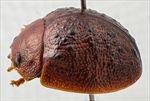
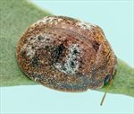
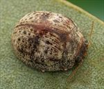
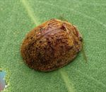
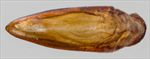
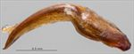
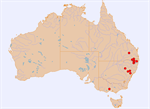

Click on images to enlarge

Male, Howes Valley, New South Wales

Female, Pikedale, S.E. Queensland

Female, Scone, New South Wales

Male, Pikedale, S.E. Queensland

Aedeagus, dorsal view (Howes Valley, New South Wales)

Aedeagus, dorsal view (Howes Valley, New South Wales)

Distribution
Ta33
Name
Trachymela sp. Ta33
Reference specimen
2004-606, Merriwa, New South Wales.
Adult Description
Length: ♂ 4.8–5.2 mm (n=14), ♀ 4.8–6.0 mm (n=21).
Colouration:
Head: light brown to mid-brown with dark brown or black-tipped mandibles; antennomeres 1–4 straw-brown, 5–11 usually concolorous, sometimes grading fractionally darker towards apex, if so, often only lateral and/or distal edges of the darker shade.
Pronotum: brown, concolorous with head, often with vague, wispy, slightly darker infuscations.
Scutellum: brown, concolorous with pronotum, usually broadly edged in a slightly darker shade of brown.
Elytra: brown, concolorous with pronotum, disc scattered with small, wart-like elevations that may be concolorous with surrounding surface or slightly to considerably darker, transverse depression near centre of disc sometimes with dark brown or black patches along its anterior and/or posterior margin or these patches may be joined into a larger dark region; punctures concolorous with or a fractionally darker shade than interstices, humeral callus concolorous with surrounding area.
Venter & Legs: light brown to mid-brown with legs of a concolorous shade, inside surface of elytral epipleura brown.
Cuticular Wax: two colours usually present – the antero-median depression of elytra and posterior region of elytra spread with grey or light brown cuticular wax, while rest of insect is scattered with a darker, brown cuticular wax at a lower intensity, producing a characteristic and quickly recognizable pattern (transverse); rarely whole dorsal surface uniformly brown in colour.
Morphology:
Head: punctures moderately large (pd ≈ 1.5–2 × ef) and quite evenly and densely distributed; antennae short, particularly in females (AL/BL: ♂ 38–41%, ♀ 31–34%), filiform.
Pronotum: almost evenly curved transversely, foveal depression absent or very shallow with epidermis elevated in a rounded pustule near its centre; discal area with surface smooth, rarely slightly uneven and puncturation clearly impressed, evenly distributed and quite dense (spacing ≈ 2 pd), becoming much coarser at lateral margins, some much finer punctures scattered among larger ones; front margins join lateral margins in a smoothly rounded right-angle, with lateral margin initially straight for about 20% of length before curving smoothly and gradually towards rear margin.
Scutellum: unpunctured or very lightly punctured, more so anteriorly, with punctures a little finer than those on adjacent area of pronotum.
Elytra: surface unevenly curved with a very shallow or distinct broad depression extending from just below elytral summit towards discal margin; punctures distinct and relatively large, closely spaced and evenly distributed over anterior two-thirds of surface, surface more granular in posterior third, with much smaller punctures scattered on interstices; several small elevated verrucae, concolorous with surface or slightly or much darker, scattered about surface, three groups of these usually present: one group (sometimes quite inconspicuous) in area between humeral callus and elytral suture and transverse depression, a second group, often most prominent, aligned roughly along posterior edge of depression, while a third consists of more isolated verrucae in posterior half of disc; surface continuous under humeral callus; vertical extension of epipleura considerable (HCE/PW = 0.39–0.42).
Venter: prosternal process almost parallel, closed anteriorly, a scatter of long setae present along prosternal process and on mesoventrite; 3–6 setae each on anterior, median, and posterior trochanters; front edge of metaventrite beveled, slightly rounded; inner edge of epipleurae lacking setae.
Male Genitalia (Aedeagus):
Dimensions: small (LPE/BL = 29–34%), lanceolate.
Dorsal view: shaft broadest at junction with basal section, from where sides converge very gradually towards apex, angle of convergence becoming fractionally sharper about 25% of distance from apex; dorsal surface smoothly curved with faint dorso-median channel usually present for most of length, tip very slightly protruding; ostium small, oval.
Lateral view: shaft almost evenly and quite lightly curved throughout its length, thinning almost imperceptibly towards apex before ostium, tip slightly deflexed.
Immature Stages
Unknown.
Similar species
Ta06: This usually slightly larger species has the same characteristic arrangement of cuticular wax as Ta33, though the regions of lighter-coloured cuticular wax are usually not as clearly defined. Ta33 tends to have a short row of setae on the trochanters and its aedeagus is considerably longer as a proportion of body length.
Ta72: A smaller species than Ta33 (the size distributions overlap only slightly), and the trochanters have a single long seta each.
Notes
Host Associations: Ta33 has been collected from two groups of eucalypts. Individuals in lower altitude areas are found on Eucalyptus crebra and other ironbark species (Symphyomyrtus: Adnataria). Hosts at higher altitude locations in northern New South Wales include E. acaciiformis and E. bridgesiana (both Symphyomyrtus: Maidenaria). Unidentified “box-barked” hosts from this area were likely one of the latter species.
Morphological Variation: A male specimen from west of Stanthorpe does not show the characteristic pattern of cuticular wax for this species but is relatively uniformly covered in solely orange-brown cuticular wax. In essentially all other morphological characters it is within the range of variation of other Ta33, though its antennae are slightly shorter than is typical.
Copyright © 2026. All rights reserved.
{kind=link}
{kind=link}
{kind=link}
.jpg){kind=link}
{kind=link}
{kind=link}
{kind=link}